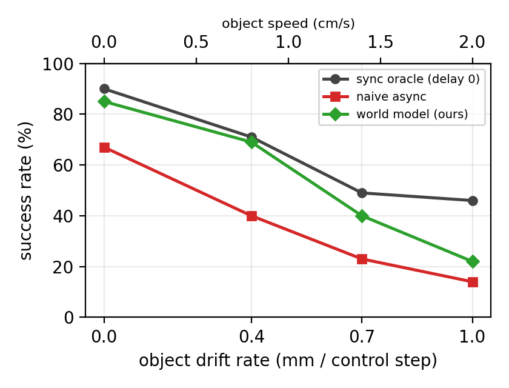
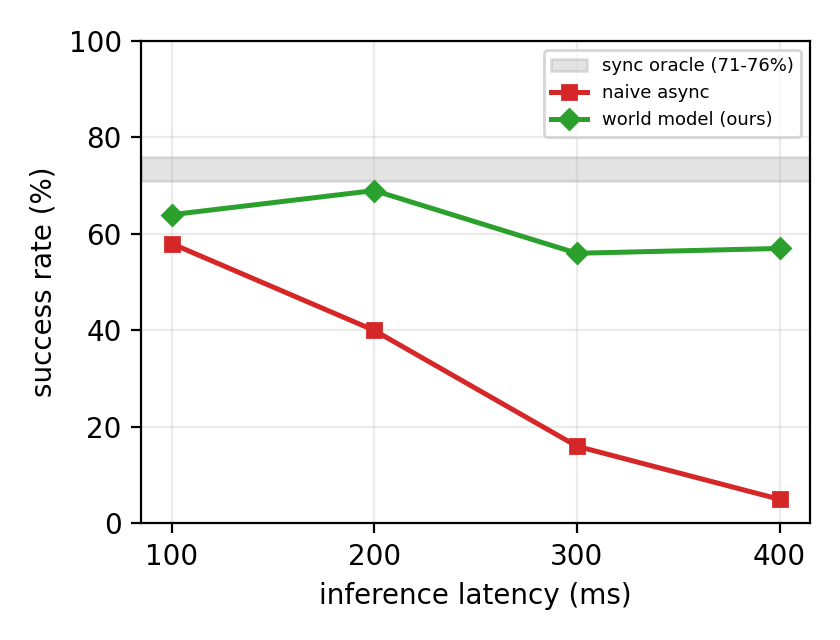

DreamActVLA: Temporally Aligned Asynchronous Inference for Vision-Language-Action Models
Can asynchronous inference work without any modifications to the VLA fine-tuning process?
What is New Here?
- VLA policies are slow to run (~120ms per inference call), forcing the robot to idle between action chunks.
- We implement DreamActVLA, a latent world model that predicts the current visual observation from the stale frame and committed actions, keeping the VLA input in-distribution with zero changes to the fine-tuning process.
- Results on all four LIBERO suites (2,000 episodes): 94.2% average success rate (vs 96.8% sync oracle), recovering +26.8pp over the async no-WM baseline.
- Additionally, we develop a set of "dynamic" evaluation tasks in LIBERO and evaluate whether our approach helps when goal objects move during inference.
Introduction
Vision-language-action (VLA) policies used for controlling robots are typically deployed with synchronous execution. If you watch demo videos from papers like π0, π0.5, or OpenVLA, you'll notice that the robot's motion is a series of movements with short pauses in between. Those pauses are the robot running inference — basically thinking about what to do next. While it's thinking, the robot either idles or blindly executes stale commands while the next plan is being computed. That's a problem, especially if anything in the scene is moving.
The obvious fix is to use asynchronous inference, where we start computing the next action chunk while the robot is still executing the current one. However, this creates a sneaky problem: by the time inference finishes, the observation that triggered it is stale.
Existing works have taken different approaches to fix this. RTC uses an inpainting-style procedure that blends the new action chunk with the old one — great for action continuity, but the policy is still looking at a stale camera frame. VLASH goes further and rolls the robot's joint state forward to the future timestep, but leaves the image stale. So the policy sees a future robot state paired with a past camera frame, a combination it never saw during training. To make this work, VLASH needs a special fine-tuning procedure with temporal offsets baked in; this is doable, but it adds cost and complexity. F2F-AP takes yet another angle and predicts optical flow by overlaying the flow vectors onto the current frame as a visual hint of future state. However but the policy must be trained from scratch to consume these flow-augmented inputs, and without action conditioning the flow can only estimate where objects drifted, not where the robot's embodiment actually went.
And then there's WAM, which treated the world model as the policy and fine-tuned a 14B video diffusion model (Wan2.1-I2V) to jointly denoise future frames and actions simultaneously via separate decoders. This is impressive, but that 14B model is itself the reason you needed async inference in the first place.
| Method | Fixes image staleness | Action-conditioned | No VLA retraining |
|---|---|---|---|
| RTC | ✗ | — | ✓ |
| VLASH | ✗ | — | ✗ |
| F2F-AP | ✓ | ✗ | ✗ |
| WAM | ✓ | ✓ | ✗ (replaces VLA) |
| DreamActVLA (Ours) | ✓ | ✓ | ✓ |
This got us thinking: what if the answer was simpler?
The real problem isn't asynchrony — it's the partial roll-forward. Move the state forward but leave the image behind, and you've created a mismatch the policy has never seen. But roll both forward to the same future instant, and the policy gets a perfectly consistent $(I_{t+\Delta}, s_{t+\Delta})$ pair — exactly what it was trained on. No distribution shift. No re-training. The policy doesn't even know it's running asynchronously.
Key Insight: Temporal alignment is the missing ingredient. Roll both the image and the state forward to the same future timestep, and async inference becomes indistinguishable from sync — no fine-tuning changes required.
We validated this in three steps: first with a privileged simulator peek (MuJoCo snapshot/restore) as a proof of concept, then with a learned latent world model that works without the simulator, and finally on a dynamic LIBERO variant where latency actually hurts. The result: 94.2% average success across all four LIBERO suites vs. 96.8% sync oracle — a gap of just 2.6 points, while the no-WM async baseline collapses to 67.3%.
Contributions
- More accurate asynchronous inference: By querying a policy with temporally aligned future $[\text{image, state}]$ observations, DreamActVLA achieves asynchronous inference without any adjustment to the fine-tuning process — a strictly more accurate approach than prior methods like RTC and VLASH that rely on temporally disjoint inputs or offset-aware training.
- Action-conditioned latent world model: We train a U-Net in the latent space of a frozen Cosmos VAE to predict future visual observations from stale frames and committed actions, removing the simulator dependency of the privileged approach without modifying the VLA policy.
- Dynamic task benchmark: A new LIBERO benchmark variant with wall-clock-tied object motion where asynchronous methods offer a clear advantage.
How we Implemented our approach
Privileged Future Observations
Note: Before investing in world model training and large-scale evaluation, we first use privileged simulator access to validate that temporally aligned observations actually help — if they don't, there is no point building a model to produce them.
Let $o_t = (I_t, s_t)$ denote the full observation at timestep $t$, where $I_t \in \mathbb{R}^{H \times W \times 3}$ is the rendered camera frame and $s_t \in \mathbb{R}^{8}$ is the proprioceptive state vector (end-effector position, axis-angle orientation, and gripper aperture).
Given a current action chunk $a = [a_t, \ldots, a_{t+N-1}]$ of length $N$, we trigger asynchronous inference $K$ steps before the chunk ends, at step $t + N - K$.
At the trigger point, rather than using the current (stale) observation, we obtain a future observation $o_{t+N}$ by performing a brief rollout within the simulator:

The four-step privileged rollout procedure. Both the image and state are captured from the same simulated future instant, ensuring temporal alignment.
The next action chunk is then computed as $\pi(o_{t+N})$ and is ready at the chunk boundary $t+N$ when the robot needs it. Because both $I_{t+N}$ and $s_{t+N}$ are drawn from the same simulated future instant, the observation pair is temporally aligned — it lies on the same distribution as the training data.
Why this is more accurate: Training data always pairs contemporaneous images and states. Prior approaches like VLASH break this pairing by only rolling forward the state, producing out-of-distribution inputs. Temporal alignment preserves the original pairing by capturing both modalities at the same future instant — no modified fine-tuning needed.
DreamActVLA: The Latent World Model
The privileged rollout trick only works in simulation. On a real robot there is no MuJoCo state to save and restore, so we need a learned model that can predict the future frame from the stale observation and the planned actions alone.
Rather than training a full pixel-space video diffusion model — which would be slow and expensive — we build on the frozen Cosmos VAE as a compact visual representation and train a lightweight latent dynamics predictor on top of it. The key insight is that future-frame prediction is much easier in latent space than in pixel space, and the Cosmos encoder already captures the visual structure we care about.

Our latent dynamics predictor. The Cosmos encoder and decoder are frozen (❄️). Only the action encoder and the U-Net up-blocks are trained (🔥). The U-Net predicts a residual $\Delta z$ rather than the full future latent, making training faster and more stable.
Concretely, the pipeline has four stages:
- Encode: The frozen Cosmos encoder maps the stale camera frame $I_t \in \mathbb{R}^{H \times W \times 3}$ to a compact latent $z_t \in \mathbb{R}^{16 \times 28 \times 28}$.
- Condition: A small trainable action encoder compresses the action chunk $A_t = [a_t, \ldots, a_{t+\Delta-1}]$ into a fixed-size conditioning vector that is broadcast into every U-Net layer via cross-attention.
- Predict: A trainable U-Net (frozen down-blocks, trained up-blocks) processes $z_t$ conditioned on the action encoding and outputs a residual $\Delta z$. The predicted future latent is $\hat{z}_{t+\Delta} = z_t + \Delta z$.
- Decode: The frozen Cosmos decoder maps $\hat{z}_{t+\Delta}$ back to pixel space, producing $\hat{o}_{t+\Delta}$ — the predicted future observation the VLA will act on.
During training we supervise $\hat{z}_{t+\Delta}$ against the ground-truth future latent obtained by encoding the corresponding future frame from the LIBERO expert demonstration dataset. At inference no dataset or simulator access is needed: the model takes only the stale frame and the committed action chunk and produces the corrected observation in one forward pass.
Why residual prediction? In manipulation tasks most of the scene — the table, the background, lighting — does not change between $t$ and $t+\Delta$. Predicting only what changes ($\Delta z$) is a much simpler regression target than predicting the full future latent from scratch, and it keeps the model compact enough to run in real time alongside policy inference.
Shifting the Prediction Interval
The cleanest way to see what DreamActVLA does is in terms of intervals. Under inference delay $\delta$, a chunk is planned for the prediction interval $[t, t+K)$ but executed over the shifted interval $[t+\delta, t+\delta+K)$ — every action lands $\delta$ steps late, applied to a world that has moved on. That misalignment is naive async, and it is what collapses in our results below.
Our fix: shift the prediction interval itself. By synthesizing the future observation $\hat{o}_{t+\delta}$ before querying the policy, the chunk is planned for $[t+\delta, t+\delta+K)$ — exactly the interval it will execute over. Perfect alignment, all $K$ actions intact, and the policy itself never changes. This is VLASH's insight — condition on the execution-time state — completed: VLASH rolls forward only the proprioceptive state and must fine-tune the policy to tolerate the resulting state-image mismatch; we roll forward the image too, so a frozen policy accepts the input as-is.
The static experiments above show this works when the robot is the only thing moving. The harder question is what happens when the world moves during the latency window — that's what the dynamic benchmark tests.
Dynamic Tasks
The privileged and world-model conditions above both use the standard (static) LIBERO suites, where objects sit still until the robot interacts with them — inference latency costs time, but it rarely changes what the right action is. To test whether temporal alignment matters when the world itself keeps moving during inference, we built a dynamic LIBERO variant in which goal-relevant objects slide across the table at constant velocity. A policy acting on a stale observation is aiming at where the object was, not where it is — exactly the regime where temporally aligned observations should matter most.
Getting this benchmark right took several design iterations:
- Sim-time drift, not wall-clock. Objects move a fixed distance per control step (e.g. 0.4 mm/step ≈ 0.8 cm/s), and are decoupled from how long the evaluation harness happens to compute. Every method faces identical physics; latency is modeled explicitly by a delay parameter $\delta$ (in 50 ms control steps). An earlier wall-clock version silently punished whichever condition ran slowest on our GPU, an unfortunate contamination we only caught by comparing per-episode wall-times.
- Goal-scoped drift. So only objects named in the task's goal predicates move. Drifting every free object shoves items off shelves and buries the workspace in clutter — the scene self-destructs rather than perturbs.
- Predicate freezing. Objects stop drifting once their goal predicate is satisfied. Without this, multi-stage tasks are unwinnable: the first delivered item slides back out of the basket while the robot fetches the second, and even a zero-latency oracle scores 0%.
- Well-posedness criteria. Tasks whose goals are defined by spatial relations ("the bowl next to the ramekin") are excluded as drift invalidates the instruction itself. The drift rates are calibrated so a zero-latency oracle retains meaningful success (~50–75%), keeping the benchmark discriminative rather than saturated at either end.
Does Our Approach Actually Work?
Does Alignment Help? Yes.
We evaluate on the LIBERO benchmark using the π0-LIBERO checkpoint without any modification or fine-tuning. Each of the below three conditions is evaluated over 50 rollouts per task:
- Sync: standard synchronous baseline.
- Future Obs (Privileged): async with simulator oracle providing the aligned future observation.
- Future-State Only: async with only the state rolled forward — the VLASH-style mismatch, serving as the failure baseline.
Each policy call produces an action chunk of length $N = 15$, and the asynchronous conditions trigger the next inference $K = 10$ steps before the current chunk ends. All other parameters are identical across conditions, so any difference in outcome reflects the inference strategy alone.
Future Obs (Privileged) nearly matches sync on success rate (92.5% vs 93.5%) with a 1.17× speedup in task completion time. Future-State Only collapses to 27.6% without aligned visual input.
The privileged condition maintains 92.5% success rate (only a 1% reduction relative to Sync) while reducing mean task completion time to 7.61 s — a 1.17× speedup. This confirms that temporal alignment alone is sufficient for near-oracle performance. Because the privileged access gives us a perfect future observation, these results establish the upper-bound oracle that a learned world model should aim to match.
Future-State-Only Ablation
We also tested a future-state-only condition — rolling forward just the state while keeping the current camera image. This is essentially what VLASH does at inference time, but applied to a stock π0 checkpoint without any offset fine-tuning.
Here the Task Success Rate falls to 27.6%. The policy simply can't handle the mismatched input. This is exactly the failure mode that motivated DreamActVLA: if you're going to roll forward, roll forward everything. Align both modalities and the policy doesn't even notice it's running asynchronously.
DreamActVLA: Learning to Align in the Real World
The privileged results confirm that temporal alignment is sufficient for near-oracle performance. But can our latent world model replicate this at scale — replacing the simulator peek with a learned prediction across all LIBERO suites.
Before examining task success rates, we verify that the world model produces visually plausible predictions. The video below shows one episode step-by-step: the stale delayed observation the policy would normally see, the WM-predicted frame it actually receives, and the ground-truth current frame from the simulator — for both the primary and wrist cameras.
The WM prediction (centre) closely matches the ground-truth current frame (right) despite being generated purely from the stale frame and the committed action sequence.
Side-by-side task execution: Sync oracle (left) succeeds; Async no-WM (centre) fails due to stale observations; Async + DreamActVLA WM (right) succeeds by correcting the visual input before each inference step.
We evaluate the latent world model on all four LIBERO suites using π0.5-libero via the OpenPI server — 50 rollouts per task, 10 tasks per suite, 500 episodes per suite. The async conditions use a fixed inference delay of 4 steps. Three conditions are compared: the official synchronous π0.5 baseline, async inference with no world model (stale observations), and async inference with DreamActVLA's latent WM providing corrected observations.
Success rate across all four LIBERO suites. The WM recovers +26.8pp on average over the no-WM async baseline, closing the gap to within 2.7pp of synchronous oracle performance. On LIBERO-Object the WM slightly exceeds the sync oracle.
Note on the async baseline: VLASH did not report naive async numbers on LIBERO, noting that static environments make async methods behave similarly. But "static" only describes the objects — the robot's own arm and gripper move every step, so a stale image shows the embodiment where it was, not where it is (most acutely in the wrist camera). This is why our naive async baseline — re-querying the unmodified π0.5-libero checkpoint on the stale observation at delay=4 — still drops average success by 29.5pp, a meaningful degradation that motivated this work.
Dynamic Tasks
These experiments use the π0.5-LIBERO checkpoint (10-action chunks, 20 Hz control) with our learned latent world model, against a zero-latency oracle and naive async (the full chunk executes $\delta$ steps late — the standard asynchronous deployment, e.g. SmolVLA's). Each cell is 100 episodes, so treat differences under ~5 points as noise.
How fast can the world move?

Success rate vs. drift rate (LIBERO-Object, $\delta = 4$ ≈ 200 ms — which happens to be this policy's measured inference latency on our hardware). Top axis: object speed in cm/s.
| Drift (mm/step) | Oracle | Naive async | DreamActVLA (WM) |
|---|---|---|---|
| 0 (static) | 90 | 67 | 85 |
| 0.4 | 71 | 40 | 69 |
| 0.7 | 49 | 23 | 40 |
| 1.0 | 46 | 14 | 22 |
Two readings. First, scene motion is expensive for everyone — even the zero-latency oracle falls from 90% to 46%, because objects keep moving during open-loop chunk execution no matter how fresh the observation was. Second, the world model recovers most of the asynchronous gap at mild-to-moderate drift: at 0.4 mm/step it sits at 69% against the oracle's 71%, with naive async at 40% — asynchronous execution at essentially synchronous accuracy, with a frozen policy.
An honest limitation. At the most aggressive drift (1.0 mm/step) the world model's gains shrink (22%). The reason is structural: our predictor is conditioned on a single stale frame plus the robot's actions — and one frame carries no velocity information, so the model renders drifting objects where the stale frame had them. It corrects the robot's self-motion exactly, but independent scene motion is invisible to any single-frame predictor. The fix is equally structural — condition on two frames so velocity is observable — and is the clear next step (see Limitations).
How much latency can it absorb?

Success rate vs. inference latency (LIBERO-Object, 0.4 mm/step drift). Shaded band: zero-latency oracle (71–76%).
| Latency | 100 ms | 200 ms | 300 ms | 400 ms |
|---|---|---|---|---|
| Naive async | 58 | 40 | 16 | 5 |
| DreamActVLA (WM) | 64 | 69 | 56 | 57 |
Naive async collapses monotonically as latency grows (58% → 5%); the world model holds 56–69% across the entire 100–400 ms range — and 320+ ms is the measured latency of inference-optimized 7B VLAs, so the right end of this axis is not exotic. The dips at 100 and 300 ms are an artifact worth owning: our predictor was trained with a fixed 4-step horizon, and those delays force zero-padded action windows; its best points sit exactly at the horizons it serves natively, so this curve is a lower bound, improvable with horizon-matched training.
What does the world model cost? Measured on our hardware: policy chunk inference $T_\pi = 226$ ms (≈ 4.5 control steps — our 200 ms condition is literally this policy's real latency); the world model adds $T_{wm} = 50$ ms per chunk, in series — one control step of extra reaction latency, about a fifth of one policy inference, and chaining predictions for longer delays is nearly free (51.7 ms for two hops). The policy still runs once per chunk, and all $K$ actions are used.
Does async fine-tuning escape the scene-motion problem?
No. We ran Real-Time Chunking (inpainting, soft masking) on a π0.5 checkpoint fine-tuned for asynchronous execution (50-action chunks) on the same drifting benchmark. It retains 51.5% on LIBERO-Object (from ~99% static) and 40% on LIBERO-10 (from ~93%): retention ratios of 0.52 and 0.43, statistically indistinguishable from our zero-latency oracle's (0.54, 0.40). A stronger policy, longer chunks, async fine-tuning, and action inpainting all degraded under scene motion exactly as much as having no latency at all — independent scene motion is currently unsolved by every latency mechanism, ours included, which is why the velocity-aware extension above is where this line of work goes next.
Discussion
Limitations
Conclusion
We have shown that temporally aligned future observations enable more accurate asynchronous inference for VLA policies without any modification to the fine-tuning procedure. By rolling forward both the image and proprioceptive state to the same future timestep, DreamActVLA keeps policy inputs in-distribution and achieves a 1.17× speedup with negligible impact on task success — a strictly more accurate approach than existing methods like RTC and VLASH.
Our approach opens two directions for future work: (1) deploying DreamActVLA on physical robots using learned world models such as COSMOS, and (2) extending the dynamic task benchmark to evaluate robustness under varying object velocities and more complex scene dynamics.
Project Code
The implementation code for this project is split across the following repositories:
- Privileged Future Observations: github.com/themboutidem/future-obs-pi0
- DreamActVLA: github.com/Somdit/DreamActVLA
- Dynamic Tasks: